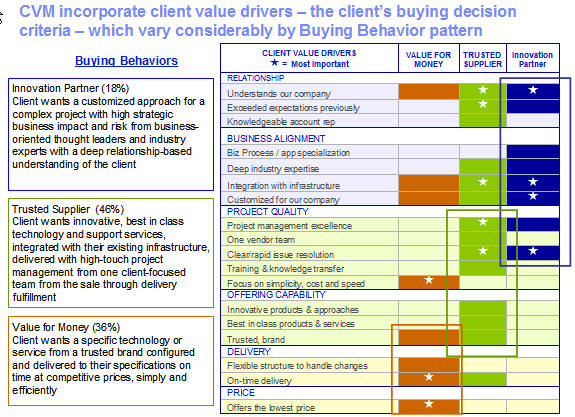
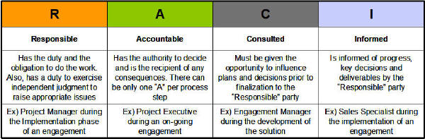

| Guideline: Project Definition for Team Solution Design |
 |
|
| Related Elements |
|---|
A Project Definition document is written to communicate the project goals and status to everyone and to ensure that everyone connected with the project agrees. Project goals can raise issues of scope, function and so on, which are best identified as early as possible. This work product will be useful to communicate the goals, scope and status of your project in a peer reviews such as a Solution Optimization Workshop, Solution Assurance Review, Technical Delivery Assessment or Integrated Technical Review. This guideline addresses specific approaches that should be considered when developing the Project Definition. Buying Behavior Buying Behavior describes what is important to the client for this project/opportunity and guides our actions. Three distinctly different buying behaviors can exist for an opportunity/project, each reflecting the different value criteria clients use to make buying decisions. Our assessment of which Buying Behavior is applicable might change as we learn more about the opportunity. Since Buyer Behavior is identified for each opportunity, it is often referred to as Opportunity Behavior. Possible Buying Behaviors are Value for the Money, Trusted Supplier or Innovation Partner. The following chart shows what the client values in each case. See: http://learning.atlanta.ibm.com/hr/global/quickviews/cviqv.nsf/Content/852573E0:006E5F6E for further information on Opportunity Behavior.  Project Background In many cases, the project may be part of a much larger initiative or set of initiatives within the client, all of which, or collectively, are transformational in nature. The relationships between the project and these other initiatives should be documented such that the interdependencies can be understood and managed. As these relationships become more complicated, the use of the Transformational Roadmap will enhance this understanding. One should consider using, and referencing, this artifact when developing the business needs and environment portion of the Project Definition.
Target Solution and Overall Approach For larger or more complex engagements, the high level Product Breakdown Structure (PBS) should be used as the basis for the development of the Work Breakdown Structure (WBS). Further, this WBS structure should also reflect the methods to be employed during delivery (e.g., Custom Application Development or Rapid SAP) so that the schedule and costs can be more accurately estimated. The WBS (ENG 362) should be referenced by the Project Definition when and if they it is developed. More information can be found in the technique paper “Architectural Methods of System Partitioning & Aggregation Including Implications for Project Management” ” located here: https://w3-connections.ibm.com/wikis/home?lang=en#!/wiki/We1b82e36a0db_41be_9dfd_a2bd4b4619b3/page/System%20Partitioning Project Scope Critical to project success is an agreed-to scope of the project. There are several ways of limiting scope including chunking and time-boxing. Solution increment "chunking" is a way of breaking a large application into smaller "bite sized" pieces which can be developed and delivered in a shorter period of time than the total application. These "chunks" may provide sufficient functionality so that they may be rolled into production before the complete application is available. So, the priority here is the level of function to be delivered. More information can be found in the technique paper “Architectural Methods of System Partitioning & Aggregation Including Implications for Project Management” located here: http://w3.tap.ibm.com/w3ki06/display/GBSCSI/System+Partitioning Time-boxing, as it applies to IT projects like application development or package integration, is a technique for iterative development and refinement of an application within a specified timeframe (e.g., 60 days or by a specific date). Perhaps some other event is driving this timeframe. All other priorities, including greater function or further integration, have to be sacrificed. The project's ultimate goal is to meet the time deadline; whatever else happens, the project must not fail to meet this deadline. Both of these scope limiting techniques have the following criteria:
When listing the major deliverables for the project, also identify those documents that will comprise the technical baseline for the project. These documents, and their revision number, are the basis for the cost and schedule committed to the client in the proposal. Any subsequent changes to the assumptions, dependencies, requirements, or other content of these documents, after contract signing, may result in the need for a project change request. It is this subset of documents that form the baseline for future project change control.
Organization For TeamSD users, this section contains tables used for defining the project management organization, the sponsor organization, delivery organization, and performing organizations. The use of a “RACI” information within such a table helps to define the role of each client and IBMer involved in a project and can be critical for success. RACI is an acronym for Responsible Accountable, Consulted, or Informed, each of which is defined in the following table.  |
| Change Date | Fri Jun 21 19:07:50 IST 2013 |
|---|---|
| Revisions | November 2008 - baseline version|June 2013 - baseline version |
© Copyright IBM Corp. 1987, 2016 All Rights Reserved |